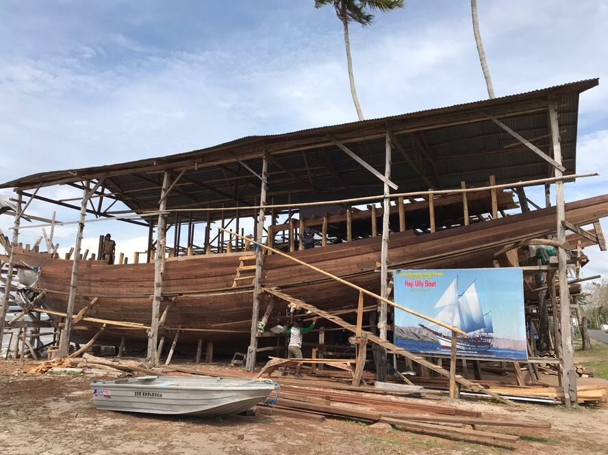

Home/Biodata

Apakah kamu tahu sejarah awal pembuatan perahu Phinisi? Begini kisahnya..
Menurut naskah Lontarak I Babad La Lagaligo, Perahu Phinisi sudah ada sekitar abad ke-14 M.
Menurut kisah tersebut, Perahu Pinisi pertama kali dibuat oleh Sawerigading, Putra Mahkota Kerajaan Luwu.
Bahan untuk membuat perahu tersebut diambil dari pohon welengreng (pohon dewata) yang terkenal sangat
kokoh dan tidak mudah rapuh. Namun, sebelum pohon itu ditebang, terlebih dahulu dilaksanakan upacara
khusus agar penunggunya bersedia pindah ke pohon lainnya. Sawerigading membuat perahu tersebut untuk
berlayar menuju negeri Tiongkok hendak meminang Putri Tiongkok yang bernama We Cudai. Singkat cerita,
Sawerigading berhasil memperistri Puteri We Cudai. Setelah beberapa lama tinggal di Tiongkok, Sawerigading
rindu kepada kampung halamannya. Dengan menggunakan perahunya yang dulu, ia berlayar ke Luwu. Namun,
ketika perahunya akan memasuki pantai Luwu, tiba-tiba gelombang besar menghantam perahunya hingga pecah.
Pecahan-pecahan perahunya terdampar ke 3 (tiga) tempat di wilayah Kabupaten Bulukumba,
yaitu di Kelurahan Ara, Tana Beru, dan Lemo-lemo. Oleh masyarakat dari ketiga kelurahan tersebut,
bagian-bagian perahu itu kemudian dirakit kembali menjadi sebuah perahu yang megah dan dinamakan Perahu Phinisi.
Hingga saat ini, Kabupaten Bulukumba masih dikenal sebagai produsen Perahu Pinisi,
dimana para pengrajinnya tetap mempertahankan tradisi dalam pembuatan perahu tersebut, terutama di
Kelurahan Tana Beru. Ketika berada di Pusat Kerajinan Perahu Pinisi di Tana Beru, para pengunjung akan
berdecak kagum melihat kepiawaian para pengrajinnya membuat Perahu Phinisi. Mereka mampu membuat perahu
yang sangat kokoh dan megah hanya berdasarkan pada pengalaman dan pengetahuan yang diperoleh dari nenek
moyang mereka, tanpa menggunakan gambar atau kepustakaan tertulis.
Bagian-bagian Perahu Phinisi :
Anjong (segitiga penyeimbang) yang berada pada bagian depan kapal
Sombala (layar utama) yang berukuran besar mencapai 200 m
Tanpasere (layar kecil) berbentuk segitiga ada di setiap tiang utama.
Cocoro pantara (layar bantu depan).
Cocoro tangnga (layar bantu tengah).
Tarengke (layar bantu di belakang).
Jenis-Jenis Kapal Phinisi :
Kapal phinisi terbagi dalam dua jenis, yaitu phinisi Palari dan phinisi Lambda. Dari segi bentuk, phinisi
Lambda cenderung lebih modern dibanding Palari. Hal itu karena phinisi Lambda sudah dilengkapi dengan mesin
untuk menjalankannya. Sehingga bisa berjalan ke laut tanpa bergantung pada angin.
Dari segi ukuran, phinisi Lambda juga cenderung lebih besar dan dapat membawa muatan yang cukup banyak.
Sementara itu, phinisi Palari ini awalnya memiliki ukuran 10 hingga 15 meter dengan daya angkut maksimal 30 ton.
Kapal ini juga masih sangat tradisional karena bergerak mengandalkan layar dan angin laut.
aman dahulu, kedua jenis kapal ini biasanya digunakan untuk mengangkut dagangan atau kapal nelayan untuk mencari ikan.
Ritual Pembuatan Kapal Phinisi
Sebelum memulai pembuatan kapal phinisi, biasanya masyarakat melakukan ritual dengan menyediakan berbagai makanan,
jajanan manis dan darah ayam jago putih sebagai persembahan.Hal itu bertujuan untuk mendapatkan keberuntungan
dan keselamatan dalam proses pengerjaan tersebut.Jajanan manis disimbolkan sebagai bentuk keinginan dari
pemilik agar kapalnya mendatangkan keuntungan yang banyak. Sementara itu darah ayam jago putih lunas kayu
diharapkan agar tidak ada darah yang tertumpah saat proses pembuatan kapal. Yang dimaksudkan agar pekerja
tidak ada yang celaka saat pengerjaan itu.